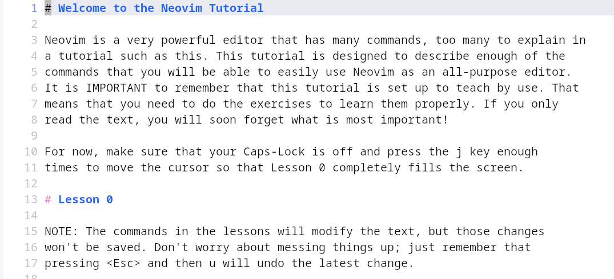

Software Development in Vim
The vast majority of remote development targets have vim installed alongside the POSIX standard utility vi. Proficiency in vim is not only an important skill to develop in order to become a more versatile software developer, but it will also introduce you to an unusual but amazingly pervasive and influential interface paradigm.
As you begin to master vim, you may find yourself instinctively hammering out commands in other applications. You’ll certainly experience a new feeling of frustration that you have to delete your mess of keystrokes, reach for your mouse, and do things the slow way. But, there will be sublime moments when you hit / in your web browser and a search box pops up, or k in your email client and the next email opens. You’ll have learned an almost secret language, and once you’ve really learned it, it’ll be such a pleasure to use the software that speaks it–and torture to use that which doesn’t.
In this course we use a popular ground-up re-implementation of Vim called NeoVim (nvim). The two are very similar from an end-user perspective, but NeoVim has a Lua based API for plugins and configuration, rather than the domain-specific vim script, and is designed for modern systems without a lot of arcane baggage associated with the older vim. This has led to its widespread adoption, supplanting vim as a primary IDE among systems programmers over the last few years. Unfortunately, it won’t be pre-installed on most rem ote systems, but any skills you learn with NeoVim will translate nicely to any of the times you come across vim or vi in the wild.
Note
On os1, once you’ve got your environment set up correctly, vim is a soft-link to nvim, so you should be able to run NeoVim with vim. You can confirm that you are set up correctly by checking the version:
$ vim --version
NVIM v0.8.0
...
Vim has a notoriously steep learning curve, but it’s more of a running joke than a reality. It takes most users no more than few hours to start to learn the basics that allow them to edit text nearly as quickly as on a more typical editor. We also have a nicely setup configuration with lots of plugins (such as code completion and an LSP server) to make the environment friendlier and easier for a beginner.
Vimtutor
The first place to start is with the comprehensive vimtutor, which is actually just a text file that you open in vim. It will walk you through many of the basic vim features. By the end of it, you should be able to perform basic editing tasks.
To get started, log into os1, and run vimtutor!
{kind=link}

vimtutor opens an interactive text file in vim so you can lean by doing!
Other tips
Leaving vim to do something in the shell, like test your code? Instead of
:wqand then having to reopen your file after, try:wand then press ctrl-z to stop vim in the background. When you’re ready to return to editing, execute the fg utility to move vim back into the foreground without losing your place.You can access man pages directly from inside vim, with the
:Mancommand (note, capital ‘M’), such as:Man vim.Want to focus on writing instead of formatting? Type up your C program and then press
\fin normal mode to run the language server formatter (clang format) and reformat your code to a consistent style. If you want to customize the automatic formatting, you can create a file in your home directory or root of your project called.clang-formatwith options you can find in the clang-format documentation online.Scrolling up and down a lot to reference an earlier part of your code? Open a split (
:sp) of the current buffer. Now you can simultaneously view two locations of the same file.